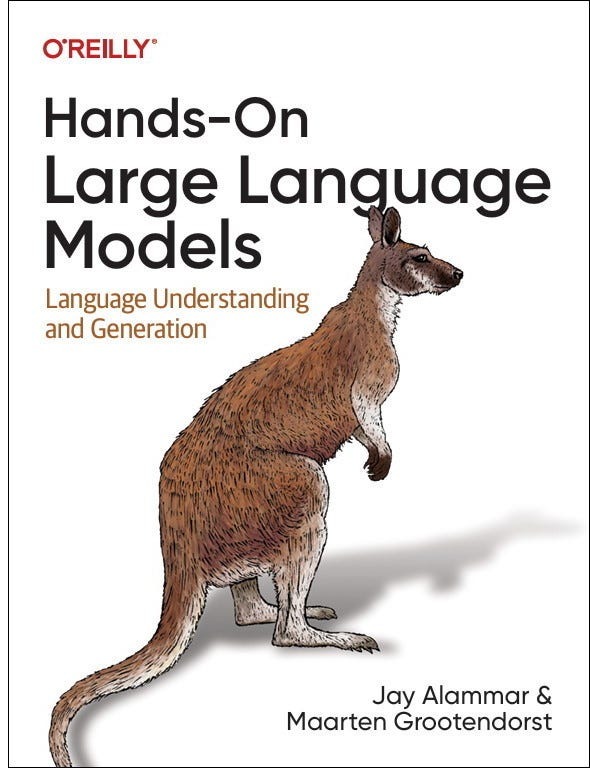

Introduction to LLMs

To understand what LLM Agents are, let's first explore the basic capabilities of an LLM. Traditionally, an LLM does nothing more than next-token prediction.

By sampling many tokens in a row, we can mimic conversations and use the LLM to give more extensive answers to our queries.

Limitations of LLMs
One of the main disadvantages of LLMs is that they do not remember conversations:

LLMs also often fail at basic math like multiplication and division:

Augmented LLMs & Agents
Through external systems, the capabilities of the LLM can be enhanced. Anthropic calls this The Augmented LLM.

For instance, when faced with a math question, the LLM may decide to use the appropriate tool (a calculator External tools that extend LLM capabilities).

Defining Agents
"An agent Entity that can perceive and act upon its environment is anything that can be viewed as perceiving its environment through sensors Components used to observe the environment and acting upon that environment through actuators Components used to interact with the environment."
— Russell & Norvig, AI: A Modern Approach (2016)
Agents interact with their environment and typically consist of several important components:
- Environments - The world the agent interacts with
- Sensors - Used to observe the environment
- Actuators - Tools used to interact with the environment
- Effectors - The brain or rules deciding how to go from observations to actions

We can generalize this framework to make it suitable for the Augmented LLM:

Using the Augmented LLM, the Agent can observe the environment through textual input (as LLMs are generally textual models Models that process and generate text) and perform certain actions through its use of tools (like searching the web Using search engines to retrieve information).

This planning behavior allows the Agent to understand the situation (LLM), plan next steps (planning), take actions (tools), and keep track of the taken actions (memory).

Depending on the system, you can find LLM Agents with varying degrees of autonomy.

Depending on who you ask, a system is more agentic the more the LLM decides how the system can behave. In the next sections, we will go through various methods of autonomous behavior through the LLM Agents three main components: Memory, Tools, and Planning.
Memory Systems
LLMs are forgetful systems, or more accurately, do not perform any memorization at all when interacting with them. For instance, when you ask an LLM a question and then follow it up with another question, it will not remember the former.

Short-term Memory
We typically refer to this as short-term memory, also called working memory, which functions as a buffer for the (near-) immediate context. This includes recent actions the LLM Agent has taken.

Long-term Memory
The LLM Agent also needs to keep track of potentially dozens of steps, not only the most recent actions. This is referred to as long-term memory as the LLM Agent could theoretically take dozens or even hundreds of steps that need to be memorized.

Enabling Short-term Memory
The most straightforward method for enabling short-term memory is to use the model's context window, which is essentially the number of tokens an LLM can process.

This works as long as the conversation history fits within the LLMs context window and is a nice way of mimicking memory. However, instead of actually memorizing a conversation, we essentially tell the LLM what that conversation was.
Memory Summarization
For models with a smaller context window, or when the conversation history is large, we can instead use another LLM to summarize the conversations that happened thus far.

Enabling Long-term Memory
Long-term memory in LLM Agents includes the agents past action space that needs to be retained over an extended period. A common technique to enable long-term memory is to store all previous interactions, actions, and conversations in an external vector database.


This method is often referred to as Retrieval-Augmented Generation (RAG) Technique to enhance LLM responses with external knowledge retrieval.
Different types of information can also be related to different types of memory to be stored. In psychology, there are numerous types of memory to differentiate, but the Cognitive Architectures for Language Agents paper coupled four of them to LLM Agents.

This differentiation helps in building agentic frameworks. Semantic memory (facts about the world) might be stored in a different database than working memory (current and recent circumstances).
Tools & Interaction
Tools allow a given LLM to either interact with an external environment (such as databases) or use external applications (such as custom code to run).

Tools generally have two use cases: fetching data to retrieve up-to-date information and taking action like setting a meeting or ordering food.
Tool Integration
To actually use a tool, the LLM has to generate text that fits with the API of the given tool. We tend to expect strings that can be formatted to JSON so that it can easily be fed to a code interpreter.

You can also generate custom functions that the LLM can use, like a basic multiplication function. This is often referred to as function calling Technique where LLMs can call specific functions with parameters.

Some LLMs can use any tools if they are prompted correctly and extensively. Tool-use is something that most current LLMs are capable of.
Tool Architecture
Tools can either be used in a given order if the agentic framework is fixed:

Or the LLM can autonomously choose which tool to use and when. LLM Agents are essentially sequences of LLM calls (but with autonomous selection of actions/tools/etc.).

Toolformer & Training for Tool Use
Much of the research involves not only prompting LLMs for tool use but training them specifically for tool use instead. One of the first techniques to do so is called Toolformer, a model trained to decide which APIs to call and how.


Since the release of Toolformer, there have been many exciting techniques such as LLMs that can use thousands of tools (ToolLLM) or LLMs that can easily retrieve the most relevant tools (Gorilla).
Model Context Protocol (MCP)
To make tools easier to implement for any given Agentic framework, Anthropic developed the Model Context Protocol (MCP). MCP standardizes API access for services like weather apps and GitHub.

Planning & Reasoning
Planning in LLM Agents involves breaking a given task up into actionable steps.

This plan allows the model to iteratively reflect on past behavior and update the current plan if necessary.
Reasoning Capabilities
Planning actionable steps requires complex reasoning behavior. As such, the LLM must be able to showcase this behavior before taking the next step in planning out the task.
Reasoning LLMs are those that tend to think before answering a question.

Enabling Reasoning
This reasoning behavior can be enabled by roughly two choices: fine-tuning the LLM or specific prompt engineering. With prompt engineering, we can create examples of the reasoning process that the LLM should follow.

This methodology of providing examples of thought processes is called Chain-of-Thought Prompting technique where the model explains its reasoning step by step and enables more complex reasoning behavior.
Chain-of-thought can also be enabled without any examples (zero-shot prompting) by simply stating "Let's think step-by-step."

ReAct Framework
One of the first techniques to combine both reasoning and action processes is called ReAct (Reason and Act).

ReAct does so through careful prompt engineering. The ReAct prompt describes three steps:
- Thought - A reasoning step about the current situation
- Action - A set of actions to execute (e.g., tools)
- Observation - A reasoning step about the result of the action

It continues this behavior until an action specifies to return the result. By iterating over thoughts and observations, the LLM can plan out actions, observe its output, and adjust accordingly.
Reflection & Self-Improvement
Nobody, not even LLMs with ReAct, will perform every task perfectly. Failing is part of the process as long as you can reflect on that process.
This process is missing from ReAct and is where Reflexion Technique where agents learn from past mistakes through verbal reinforcement comes in. Reflexion is a technique that uses verbal reinforcement to help agents learn from prior failures.

Memory modules are added to track actions (short-term) and self-reflections (long-term), helping the Agent learn from its mistakes and identify improved actions.
A similar and elegant technique is called SELF-REFINE, where actions of refining output and generating feedback are repeated.

Multi-Agent Systems
The single Agent we explored has several issues: too many tools may complicate selection, context becomes too complex, and the task may require specialization.
Instead, we can look towards Multi-Agents, frameworks where multiple agents (each with access to tools, memory, and planning) are interacting with each other and their environments:

These Multi-Agent systems usually consist of specialized Agents, each equipped with their own toolset and overseen by a supervisor. The supervisor manages communication between Agents and can assign specific tasks to the specialized Agents.

In practice, there are dozens of Multi-Agent architectures with two components at their core:
- Agent Initialization - How are individual (specialized) Agents created?
- Agent Orchestration - How are all Agents coordinated?
Generative Agents
One of the most influential Multi-Agent papers is "Generative Agents: Interactive Simulacra of Human Behavior". In this paper, they created computational software agents that simulate believable human behavior.

The Memory module is one of the most vital components in this framework. It stores both the planning and reflection behaviors, as well as all events thus far.
Multi-Agent Frameworks
Whatever framework you choose for creating Multi-Agent systems, they are generally composed of several ingredients, including its profile, perception of the environment, memory, planning, and available actions.

Popular frameworks for implementing these components are AutoGen, MetaGPT, and CAMEL. However, each framework approaches communication between each Agent a bit differently.
With CAMEL, for instance, the user first creates its question and defines AI User and AI Assistant roles. The AI user role represents the human user and will guide the process.

After that, the AI User and AI Assistant will collaborate on resolving the query by interacting with each other.

This role-playing methodology enables collaborative communication between agents. AutoGen and MetaGPT have different methods of communication, but it all boils down to this collaborative nature of communication.
In the last year, and especially the last few weeks, the growth of these frameworks has been explosive.

Conclusion
LLM Agents represent a powerful evolution in AI capabilities, combining the natural language understanding of large language models with the ability to interact with their environment through tools, retain information in memory systems, and plan complex actions.
The field continues to evolve rapidly, with advances in:
- More sophisticated planning and reasoning capabilities
- Enhanced memory systems for better context retention
- Improved tools integration and execution
- Advanced multi-agent coordination for complex tasks
- Self-reflection and improvement mechanisms
As these technologies continue to mature, we can expect LLM Agents to take on increasingly complex tasks and provide more sophisticated assistance across a wide range of domains.
"This concludes our journey of LLM Agents! Hopefully, this guide gives a better understanding of how LLM Agents are built."
— Maarten Grootendorst
A Visual Guide to LLM Agents
Based on the tutorial by Maarten Grootendorst
Original article: A Visual Guide to LLM Agents
All images and content © Maarten Grootendorst